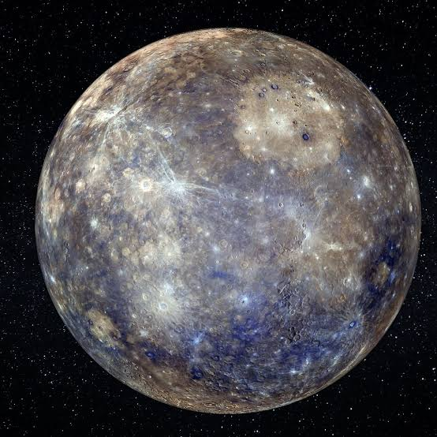
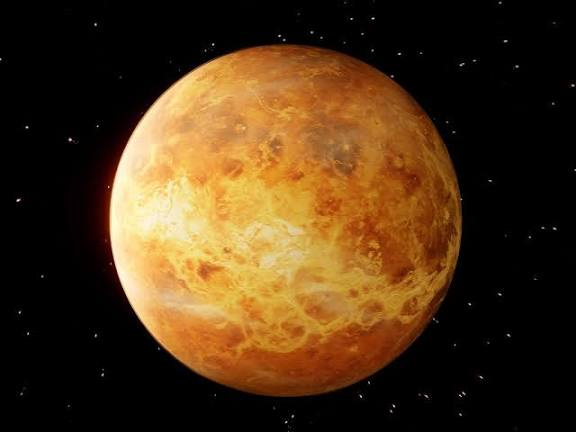
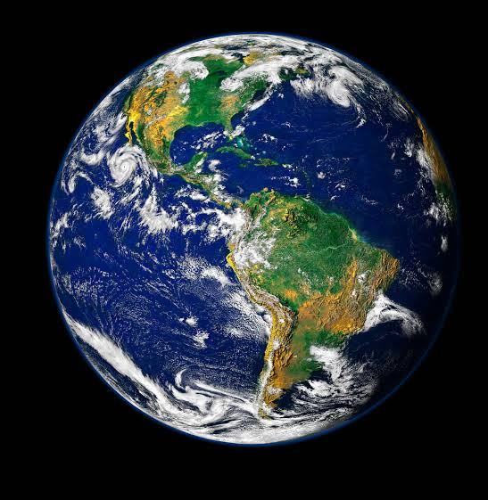
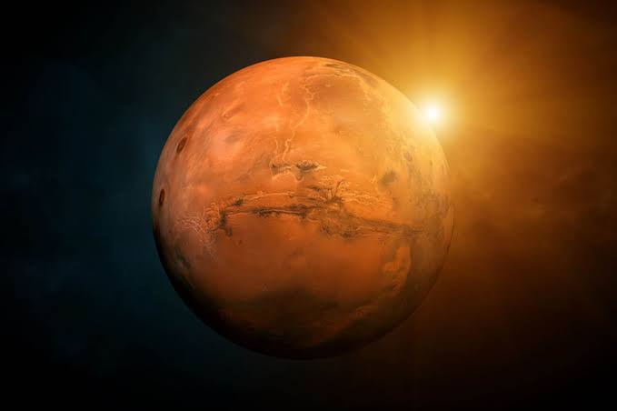
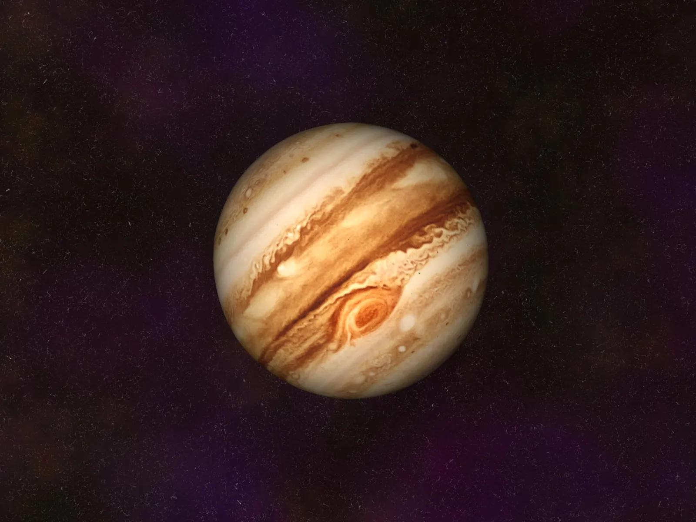
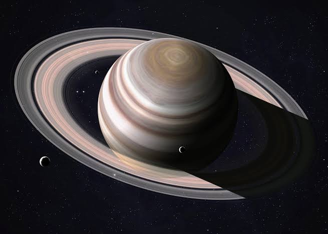
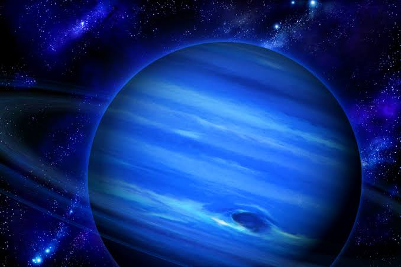

Planetary Exploration Interface

Mercury
The smallest planet in our solar system and the closest to the Sun. Mercury's surface resembles that of Earth's Moon, scarred by countless impact craters.
Astrophysical Readout
Mercury has almost no atmosphere, meaning it experiences extreme temperature variations—from 430°C (800°F) during the day to -180°C (-290°F) at night. Its large iron core makes it the second densest planet in the solar system.

Venus
Often called Earth's twin in size, Venus has a thick, toxic atmosphere of carbon dioxide that traps heat in a runaway greenhouse effect, making it the hottest planet.
Astrophysical Readout
Surface pressure on Venus is 92 times that of Earth, equivalent to being 900 meters underwater. It spins backwards compared to most planets, and a single day on Venus lasts longer than its year.

Earth
The only place in the known universe confirmed to host life. Earth is the fifth-largest planet in the solar system and the only one known to possess liquid water.
Astrophysical Readout
Earth's dynamic atmosphere protects life from harmful solar radiation while maintaining a stable average surface temperature of 15°C (59°F). Its powerful magnetic field deflects solar winds.

Mars
The Red Planet is a cold desert world. It is half the size of Earth, and has a thin atmosphere composed primarily of carbon dioxide. A primary target for human exploration.
Astrophysical Readout
Home to Olympus Mons, the largest volcano in the solar system, and Valles Marineris, a canyon system stretching over 4,000 km. Evidence suggests ancient riverbeds and a past climate capable of supporting liquid water.

Jupiter
The largest planet in the solar system, more massive than all other planets combined. Jupiter's iconic Great Red Spot is a giant storm that has been raging for centuries.
Astrophysical Readout
Jupiter's magnetic field is 20,000 times stronger than Earth's. It lacks a solid surface, composed mostly of hydrogen and helium. It has 95 known moons, including the icy ocean world Europa.

Saturn
Adorned with a spectacular ring system, Saturn is the second-largest planet. It is a gas giant composed mostly of hydrogen and helium, with the lowest density of any planet.
Astrophysical Readout
Saturn's rings are made mostly of billions of ice and rock particles. It is so light that it would float in water. Its moon Titan has a thick nitrogen atmosphere and liquid methane lakes.

Uranus
A uniquely tilted planet that rotates on its side. Uranus is an ice giant, made of water, methane, and ammonia fluids above a small rocky core. A pale blue hue defines it.
Astrophysical Readout
Uranus has an axial tilt of 98 degrees, meaning it essentially orbits the Sun on its side. Methane in its upper atmosphere absorbs red light, giving the planet its distinct cyan color.

Neptune
The most distant planet from the Sun. Neptune is a dark, cold, and supersonic-wind battered ice giant. It was the first planet discovered through mathematical prediction.
Astrophysical Readout
Neptune has the fastest winds in the solar system, reaching speeds of 2,100 km/h (1,300 mph). Its deep blue color is intensified by an unknown compound in its atmosphere.
Mission Guide
Navigate the System
Scroll horizontally through the planetary database above. As you move, the interactive 3D cards will respond to your viewport, allowing you to seamlessly browse the solar system's celestial bodies.
Initiate Exploration
When you find a planet you wish to study, click the "Initiate Exploration" button. This will launch the full interactive 3D model of that specific planet on its dedicated page.
Press the Dots
On the interactive planet page, you will notice glowing pulsing dots placed at key locations. Click these dots to trigger a detailed deep-scan of that specific feature or region on the planet.
Retrieve Information
After clicking a dot, our system reveals hidden details. Information such as astrophysical readouts, historical facts, and environmental data is fetched directly from our database and displayed in a mission panel for your research.